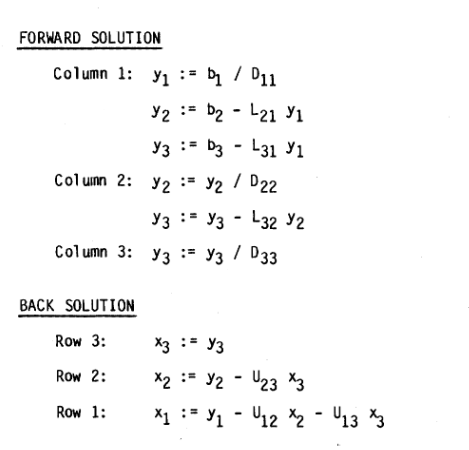
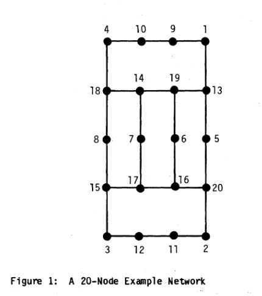
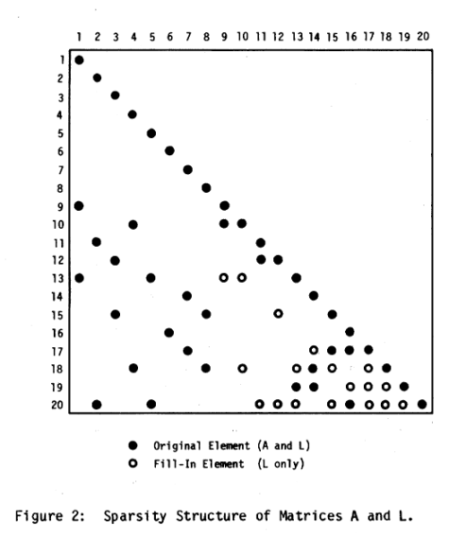
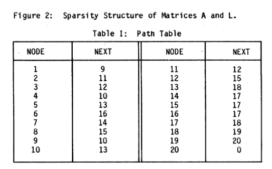
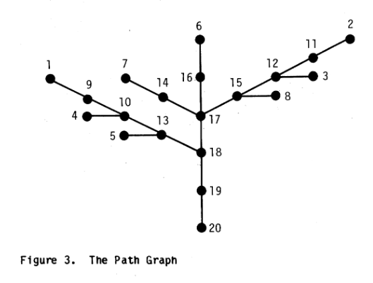
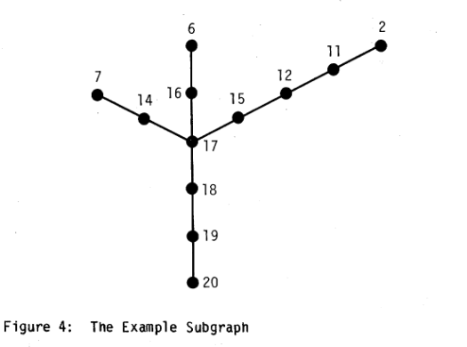
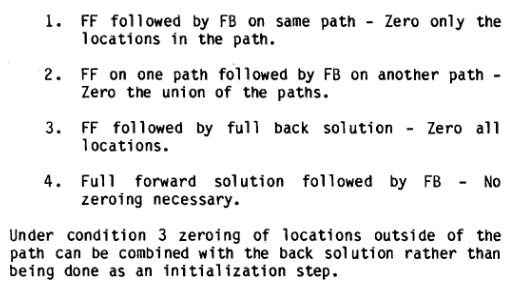

<!DOCTYPE html>


<html lang="zh-CN">


<head>
  <meta name="baidu-site-verification" content="codeva-NSg7ynviLa" />
  <meta charset="utf-8" />
    
  <meta name="viewport" content="width=device-width, initial-scale=1, maximum-scale=1" />
  <title>
    文献阅读-稀疏向量方法 |  
  </title>
  <meta name="generator" content="hexo-theme-ayer">
  
  <link rel="shortcut icon" href="/images/mojie.jpg" />
  
  
<link rel="stylesheet" href="/dist/main.css">

  <link rel="stylesheet" href="https://cdn.jsdelivr.net/gh/Shen-Yu/cdn/css/remixicon.min.css">
  
<link rel="stylesheet" href="/css/custom.css">

  
  <script src="https://cdn.jsdelivr.net/npm/pace-js@1.0.2/pace.min.js"></script>
  
  

  

<link rel="alternate" href="/atom.xml" title="null" type="application/atom+xml">
</head>

</html>

<body>
  <div id="app">
    
      
    <main class="content on">
      <section class="outer">
  <article
  id="post-文献阅读-稀疏向量方法"
  class="article article-type-post"
  itemscope
  itemprop="blogPost"
  data-scroll-reveal
>
  <div class="article-inner">
    
    <header class="article-header">
       
<h1 class="article-title sea-center" style="border-left:0" itemprop="name">
  文献阅读-稀疏向量方法
</h1>
 

    </header>
     
    <div class="article-meta">
      <a href="/posts/306861db/" class="article-date">
  <time datetime="2022-12-09T09:28:15.000Z" itemprop="datePublished">2022-12-09</time>
</a> 
  <div class="article-category">
    <a class="article-category-link" href="/categories/%E7%90%86%E8%AE%BA%E5%AD%A6%E4%B9%A0/">理论学习</a> / <a class="article-category-link" href="/categories/%E7%90%86%E8%AE%BA%E5%AD%A6%E4%B9%A0/%E7%A8%80%E7%96%8F%E7%9F%A9%E9%98%B5/">稀疏矩阵</a>
  </div>
  
<div class="word_count">
    <span class="post-time">
        <span class="post-meta-item-icon">
            <i class="ri-quill-pen-line"></i>
            <span class="post-meta-item-text"> 字数统计:</span>
            <span class="post-count">2.1k</span>
        </span>
    </span>

    <span class="post-time">
        &nbsp; | &nbsp;
        <span class="post-meta-item-icon">
            <i class="ri-book-open-line"></i>
            <span class="post-meta-item-text"> 阅读时长≈</span>
            <span class="post-count">7 分钟</span>
        </span>
    </span>
</div>
 
    </div>
      
    <div class="tocbot"></div>


  
    <div class="article-entry" itemprop="articleBody">
       
  <link rel="stylesheet" type="text/css" href="https://cdn.jsdelivr.net/hint.css/2.4.1/hint.min.css"><p>介绍稀疏向量方法的文献。</p>
<span id="more"></span>
<h1>引言</h1>
<ol>
<li>稀疏矩阵方法得到广泛应用，但是稀疏向量方法没有得到重视，即我们一般不会考虑向量的稀疏性。</li>
<li>在求解方程组时，稀疏向量方法在两种情况下很实用，1）右手项是稀疏的；2）我们只需要得到解向量的一部分元素。</li>
<li>稀疏向量算法的主要优势是求解速度更快。</li>
</ol>
<h1>稀疏分解</h1>
<p>一般的线性方程组可以表述为  ，其中  是一个非奇异矩阵，并且可以进一步分解为</p>
<p style=""></p><p>如果  是对称矩阵，那么  ；如果  是 incidence symmetric, 那么  不是  的转置，但是二者的稀疏结构相同。</p>
<p>稀疏向量方法适用于任何一个非奇异的矩阵  ，但是如果  满足  incidence symmetric，那么可以简化表达式。</p>
<p>求解过程可以分为两步，向前求解和向后求解。<strong>对于稀疏向量算法，向前求解必须按列执行，向后求解必须按行执行（见附录A）</strong>。</p>
<p style=""></p><p>不同的存储格式可以用于存储  和  ，但是对于稀疏向量算法，我们需要直接获取  矩阵中的<strong>每一列</strong>的非对角的非零元素，这一般可以得到满足。</p>
<p>附录 A 的内容直接放在下面</p>
<h2 id="附录-A-求解过程">附录 A - 求解过程</h2>
<p>这里  其实还是可以分为两步， 和  ，第一步就是常规的三角方程组求解，第二步其实就是  的每个元素除以  相应位置的对角线元素。这两步在计算过程中可以合二为一。</p>
<p>以一个  的矩阵方程组为例，假设   分解为 ，这里  矩阵按列存储， 矩阵按行存储，因此向前求解过程按照外积方法（求出的解再除以  的对角线元素），向后求解过程按照内积方法，过程如下</p>
<p></p>
<h1>稀疏向量求解</h1>
<p>右手项  很多情况下是稀疏的，但是解向量  一般不是稀疏的。接下来我们说到的“稀疏向量”要么指的是一个稀疏向量  ，要么就是指我们感兴趣的  向量的子集，可以语境来判断是哪一种情况。</p>
<p>如果右手项  是稀疏的，那么向前求解时，我们只需要  的一部分列（因为采用外积方式，如果 ，那么就不需要使用  列），这称为<strong>快速向前求解 (fast forward, FF)</strong>。如果我们只需要向量  的一部分元素，那么向后求解时，我们只需要使用  的一部分行（行号对应需要向量  的这部分元素的序号，这里应该还需要这部分行中的其它非零元素的行），这称为<strong>快速向后求解 (fast back, FB)</strong>。  <strong>稀疏向量的核心原理就是有效确定 FF 和 FB 中   和  的子集</strong>。</p>
<p>使用 FF 相对于全向前求解 (full forward solution) 的相对优势 R 计算公式如下</p>
<p style=""></p><p>FB 的 R 值类似。</p>
<h1>分解路径</h1>
<p>稀疏向量方法中的向前分解可以采用下面简单的算法得到</p>
<ol>
<li>将  的所有元素设为0，然后加入  中给定的非零元素（“解压”右手项）。设 k 是第一个非零元素。</li>
<li>对  的第 k 列执行向前分解（因为 k 列之前的解均为 0）。</li>
<li>将 k 改为此时   中下一个非零元素的位置。</li>
<li>如果 k = N ，程序终止。不然，回到步骤2。</li>
</ol>
<p>这个算法确保在 FF 中只执行必要的非零操作，但是它在第一步和第三步比较浪费时间。FB 也有一个类似的算法。</p>
<p>更加高效的算法需要用到**分解路径 (factorization paths)**的概念，以下也简称路径。稀疏向量的一个分解路径定义为 FF 中使用的   矩阵的列的有序列表，或者 FB 中  矩阵的行的列表。分解路径在 FF 中按照向前的顺序执行，在 FB 中按照向后的顺序执行。在 FF 和 FB 中可能使用相同或者不同的路径。</p>
<p>对于一个 singleton （只有一个非零元素的向量），可以使用下面的算法决定其路径。</p>
<ol>
<li>设 k 是路径中的第一个数字</li>
<li>得到  矩阵的第 k 列 (或   矩阵的第 k 行 ) 非对角线上的最小的非零元素，替换 k ，并加入到路径中。</li>
<li>如果 k = N ，退出。不然，回到步骤2 。</li>
</ol>
<p>一个一般的稀疏向量可以视为多个 singletons 的组合，其路径也是这些 singletons 的路径的并集。</p>
<p>路径的性质可以通过下面一个例子来说明。下图1为 20个节点的图，图2是相应的  阵和  阵的结构。</p>
<p></p>
<p></p>
<p>对于这个图的一个路径表格见下表，其描述所有的 singleton 的路径，任何一个 singleton 均可以直接从这个表格追溯到，首先起始节点为 K ，然后追踪 K 的 NEXT 列，一直到 K=N。举个例子，对于 K=4 的 singleton，其路径为 {4,10,13,18,19,20} 。但是注意这个路径表格在实践中不会生成，因为相应的信息均在  或  矩阵中。</p>
<p></p>
<p>路径表格一个图像描述见下图，对于 FF 方向是从低到高，对于 FB 则是从高到低。</p>
<p></p>
<p>下面是一个对于多个非零元素的稀疏向量查找路径的算法。</p>
<ol>
<li>首先从稀疏向量中第一个非零元素开始，按照上面的方法查找其 singleton 的路径，这个路径通常都会终止于 N 。</li>
<li>确定稀疏向量中下一个不在之前路径中的非零元素，查找其 singleton 路径直到找到某个元素已经出现在之前的路径中了。</li>
<li>将新形成的路径片段合并到之前路径的前端。</li>
<li>如果稀疏向量中所有非零元素均在路径中，退出。不然，回到步骤2。</li>
</ol>
<p>举个例子，假设我们有一个在 2,6,7,12 位置上具有非零元素的稀疏向量。第一步通过节点2找到的路径为 {2,11,12,15,17,18,19,20} 。第二个找到的路径片段为 {6,16} ，第三个为 {7,14}，第四个没有任何路径片段。总的路径为 {7,14,6,16, 2,11,12,15,17,18,19,20} 。<br>
从图像来看，这些路径组成的子图如下</p>
<p></p>
<p>在 FF 中，一个节点/未知数的求解需要知道子图中所有在其前面的节点的值。但是在交会点之前的分支可以按照任何顺序计算，也就是说 {7,14}, {6,16}, {2,11,12,15} 这三个分支可以按照任意顺序计算，然后再计算 {17,18,19,20} 。FB 类似，不过方向相反。</p>
<p>举个例子，在 FF 过程，对于子图中的某个节点 k ，只有在其前面的节点在计算过程中才会影响右手项 k 位置的值。比如节点 12，那么在求解节点2 和节点 11 时均会修改右手项节点 12 的值，但是求解节点 6 不会影响右手项节点 12 的值（因为在  矩阵中 (12,6) 不在第6列中）。</p>
<h1>稀疏向量操作的初始化</h1>
<p>我们需要避免对路径之外的位置进行归零(zeroing)，这里总共分为4种情况。其实这里只有涉及 FF 方法，才涉及到归零的操作（首先将右手项路径中或全部位置设为 0.0，然后再将右手项中的非零元素加进来）。</p>
<p></p>
<h1>实验结果</h1>
<ol>
<li>对于 singletons ，稀疏向量算法具有优势。</li>
<li>随着随机选择的非零元素的增加，路径长度和计算时间随之增加，虽然增加幅度相对缓慢，但是这也说明当随机选择的非零元素越来越多时，稀疏向量算法的优势就逐渐消除。</li>
</ol>
<h1>结论</h1>
<p>稀疏向量算法的效果取决于向量的稀疏程序，以及向量与系数矩阵的拓扑关系。</p>
<h1>文献</h1>
<ol>
<li>Tinney W F, Brandwajn V, Chan S M. Sparse vector methods[J]. IEEE transactions on power apparatus and systems, 1985 (2): 295-301.</li>
</ol>
 
      <!-- reward -->
      
    </div>
    

    <!-- copyright -->
    
    <div class="declare">
      <ul class="post-copyright">
        <li>
          <i class="ri-copyright-line"></i>
          <strong>版权声明： </strong>
          
          本博客所有文章除特别声明外，著作权归作者所有。转载请注明出处！
          
        </li>
      </ul>
    </div>
    
    <footer class="article-footer">
       
  <ul class="article-tag-list" itemprop="keywords"><li class="article-tag-list-item"><a class="article-tag-list-link" href="/tags/%E7%90%86%E8%AE%BA%E5%AD%A6%E4%B9%A0/" rel="tag">理论学习</a></li><li class="article-tag-list-item"><a class="article-tag-list-link" href="/tags/%E7%A8%80%E7%96%8F%E7%9F%A9%E9%98%B5/" rel="tag">稀疏矩阵</a></li></ul>

    </footer>
  </div>

   
  <nav class="article-nav">
    
      <a href="/posts/b245ffb2/" class="article-nav-link">
        <strong class="article-nav-caption">上一篇</strong>
        <div class="article-nav-title">
          
            文献阅读-稀疏矩阵求逆
          
        </div>
      </a>
    
    
      <a href="/posts/d5f7e646/" class="article-nav-link">
        <strong class="article-nav-caption">下一篇</strong>
        <div class="article-nav-title">python包-openpyxl</div>
      </a>
    
  </nav>

   
<!-- valine评论 -->
<div id="vcomments-box">
  <div id="vcomments"></div>
</div>
<script src="//cdn1.lncld.net/static/js/3.0.4/av-min.js"></script>
<script src="https://cdn.jsdelivr.net/npm/valine@1.4.14/dist/Valine.min.js"></script>
<script>
  new Valine({
    el: "#vcomments",
    app_id: "yHN3kf7fHt5wvleM2DVoHLdY-gzGzoHsz",
    app_key: "RPIwmdftljIzOtAULwc7JCAp",
    path: window.location.pathname,
    avatar: "monsterid",
    placeholder: "靓仔，看完留个评论再走哇！\n只需要填入昵称和邮箱就可以了",
    recordIP: true,
  });
  const infoEle = document.querySelector("#vcomments .info");
  if (infoEle && infoEle.childNodes && infoEle.childNodes.length > 0) {
    infoEle.childNodes.forEach(function (item) {
      item.parentNode.removeChild(item);
    });
  }
</script>
<style>
  #vcomments-box {
    padding: 5px 30px;
  }

  @media screen and (max-width: 800px) {
    #vcomments-box {
      padding: 5px 0px;
    }
  }

  #vcomments-box #vcomments {
    background-color: #fff;
  }

  .v .vlist .vcard .vh {
    padding-right: 20px;
  }

  .v .vlist .vcard {
    padding-left: 10px;
  }
</style>

 
   
     
</article>

</section>
      <footer class="footer">
  <div class="outer">
    <ul>
      <li>
        Copyrights &copy;
        2019-2025
        <i class="ri-heart-fill heart_icon"></i> Vincere Zhou
      </li>
    </ul>
    <ul>
      <li>
        
        
        <span>
  <span><i class="ri-user-3-fill"></i>访问人数:<span id="busuanzi_value_site_uv"></span></s>
  <span class="division">|</span>
  <span><i class="ri-eye-fill"></i>浏览次数:<span id="busuanzi_value_page_pv"></span></span>
</span>
        
      </li>
    </ul>
    <ul>
      
    </ul>
    <ul>
      
    </ul>
    <ul>
      <li>
        <!-- cnzz统计 -->
        
      </li>
    </ul>

    <!-- 与只只在一起天数 -->
	<ul>
		<li><span id="lovetime_span"></span></li>
	</ul>
    <script type="text/javascript">			
        function show_runtime() {
            window.setTimeout("show_runtime()", 1000);
            X = new Date("03/04/2021 22:11:00");
            Y = new Date();
            T = (Y.getTime() - X.getTime());
            M = 24 * 60 * 60 * 1000;
            a = T / M;
            A = Math.floor(a);
            b = (a - A) * 24;
            B = Math.floor(b);
            c = (b - B) * 60;
            C = Math.floor((b - B) * 60);
            D = Math.floor((c - C) * 60);
            lovetime_span.innerHTML = "只只和男朋友在一起了 " + A + "天" + B + "小时" + C + "分" + D + "秒"
        }
        show_runtime();
    </script>

  </div>
</footer>
      <div class="float_btns">
        <div class="totop" id="totop">
  <i class="ri-arrow-up-line"></i>
</div>

      </div>
    </main>
    <aside class="sidebar on">
      <button class="navbar-toggle"></button>
<nav class="navbar">
  
  <div class="logo">
    <a href="/"></a>
  </div>
  
  <ul class="nav nav-main">
    
    <li class="nav-item">
      <a class="nav-item-link" href="/">主页</a>
    </li>
    
    <li class="nav-item">
      <a class="nav-item-link" href="/archives">归档</a>
    </li>
    
    <li class="nav-item">
      <a class="nav-item-link" href="/categories">分类</a>
    </li>
    
    <li class="nav-item">
      <a class="nav-item-link" href="/tags">标签</a>
    </li>
    
    <li class="nav-item">
      <a class="nav-item-link" href="/friends">友链</a>
    </li>
    
    <li class="nav-item">
      <a class="nav-item-link" href="/about">关于</a>
    </li>
    
  </ul>
</nav>
<nav class="navbar navbar-bottom">
  <ul class="nav">
    <li class="nav-item">
      
      <a class="nav-item-link nav-item-search"  title="搜索">
        <i class="ri-search-line"></i>
      </a>
      
      
      <a class="nav-item-link" target="_blank" href="/atom.xml" title="RSS Feed">
        <i class="ri-rss-line"></i>
      </a>
      
    </li>
  </ul>
</nav>
<div class="search-form-wrap">
  <div class="local-search local-search-plugin">
  <input type="search" id="local-search-input" class="local-search-input" placeholder="Search...">
  <div id="local-search-result" class="local-search-result"></div>
</div>
</div>
    </aside>
    <script>
      if (window.matchMedia("(max-width: 768px)").matches) {
        document.querySelector('.content').classList.remove('on');
        document.querySelector('.sidebar').classList.remove('on');
      }
    </script>
    <div id="mask"></div>

<!-- #reward -->
<div id="reward">
  <span class="close"><i class="ri-close-line"></i></span>
  <p class="reward-p"><i class="ri-cup-line"></i>请我喝杯茶吧~</p>
  <div class="reward-box">
    
    <div class="reward-item">
      
      <span class="reward-type">支付宝</span>
    </div>
    
    
    <div class="reward-item">
      
      <span class="reward-type">微信</span>
    </div>
    
  </div>
</div>
    
<script src="/js/jquery-2.0.3.min.js"></script>


<script src="/js/lazyload.min.js"></script>

<!-- Tocbot -->


<script src="/js/tocbot.min.js"></script>

<script>
  tocbot.init({
    tocSelector: '.tocbot',
    contentSelector: '.article-entry',
    headingSelector: 'h1, h2, h3, h4, h5, h6',
    hasInnerContainers: true,
    scrollSmooth: true,
    scrollContainer: 'main',
    positionFixedSelector: '.tocbot',
    positionFixedClass: 'is-position-fixed',
    fixedSidebarOffset: 'auto'
  });
</script>

<script src="https://cdn.jsdelivr.net/npm/jquery-modal@0.9.2/jquery.modal.min.js"></script>
<link rel="stylesheet" href="https://cdn.jsdelivr.net/npm/jquery-modal@0.9.2/jquery.modal.min.css">
<script src="https://cdn.jsdelivr.net/npm/justifiedGallery@3.7.0/dist/js/jquery.justifiedGallery.min.js"></script>

<script src="/dist/main.js"></script>

<!-- ImageViewer -->

<!-- Root element of PhotoSwipe. Must have class pswp. -->
<div class="pswp" tabindex="-1" role="dialog" aria-hidden="true">

    <!-- Background of PhotoSwipe. 
         It's a separate element as animating opacity is faster than rgba(). -->
    <div class="pswp__bg"></div>

    <!-- Slides wrapper with overflow:hidden. -->
    <div class="pswp__scroll-wrap">

        <!-- Container that holds slides. 
            PhotoSwipe keeps only 3 of them in the DOM to save memory.
            Don't modify these 3 pswp__item elements, data is added later on. -->
        <div class="pswp__container">
            <div class="pswp__item"></div>
            <div class="pswp__item"></div>
            <div class="pswp__item"></div>
        </div>

        <!-- Default (PhotoSwipeUI_Default) interface on top of sliding area. Can be changed. -->
        <div class="pswp__ui pswp__ui--hidden">

            <div class="pswp__top-bar">

                <!--  Controls are self-explanatory. Order can be changed. -->

                <div class="pswp__counter"></div>

                <button class="pswp__button pswp__button--close" title="Close (Esc)"></button>

                <button class="pswp__button pswp__button--share" style="display:none" title="Share"></button>

                <button class="pswp__button pswp__button--fs" title="Toggle fullscreen"></button>

                <button class="pswp__button pswp__button--zoom" title="Zoom in/out"></button>

                <!-- Preloader demo http://codepen.io/dimsemenov/pen/yyBWoR -->
                <!-- element will get class pswp__preloader--active when preloader is running -->
                <div class="pswp__preloader">
                    <div class="pswp__preloader__icn">
                        <div class="pswp__preloader__cut">
                            <div class="pswp__preloader__donut"></div>
                        </div>
                    </div>
                </div>
            </div>

            <div class="pswp__share-modal pswp__share-modal--hidden pswp__single-tap">
                <div class="pswp__share-tooltip"></div>
            </div>

            <button class="pswp__button pswp__button--arrow--left" title="Previous (arrow left)">
            </button>

            <button class="pswp__button pswp__button--arrow--right" title="Next (arrow right)">
            </button>

            <div class="pswp__caption">
                <div class="pswp__caption__center"></div>
            </div>

        </div>

    </div>

</div>

<link rel="stylesheet" href="https://cdn.jsdelivr.net/npm/photoswipe@4.1.3/dist/photoswipe.min.css">
<link rel="stylesheet" href="https://cdn.jsdelivr.net/npm/photoswipe@4.1.3/dist/default-skin/default-skin.min.css">
<script src="https://cdn.jsdelivr.net/npm/photoswipe@4.1.3/dist/photoswipe.min.js"></script>
<script src="https://cdn.jsdelivr.net/npm/photoswipe@4.1.3/dist/photoswipe-ui-default.min.js"></script>

<script>
    function viewer_init() {
        let pswpElement = document.querySelectorAll('.pswp')[0];
        let $imgArr = document.querySelectorAll(('.article-entry img:not(.reward-img)'))

        $imgArr.forEach(($em, i) => {
            $em.onclick = () => {
                // slider展开状态
                // todo: 这样不好，后面改成状态
                if (document.querySelector('.left-col.show')) return
                let items = []
                $imgArr.forEach(($em2, i2) => {
                    let img = $em2.getAttribute('data-idx', i2)
                    let src = $em2.getAttribute('data-target') || $em2.getAttribute('src')
                    let title = $em2.getAttribute('alt')
                    // 获得原图尺寸
                    const image = new Image()
                    image.src = src
                    items.push({
                        src: src,
                        w: image.width || $em2.width,
                        h: image.height || $em2.height,
                        title: title
                    })
                })
                var gallery = new PhotoSwipe(pswpElement, PhotoSwipeUI_Default, items, {
                    index: parseInt(i)
                });
                gallery.init()
            }
        })
    }
    viewer_init()
</script>

<!-- MathJax -->

<script type="text/x-mathjax-config">
  MathJax.Hub.Config({
      tex2jax: {
          inlineMath: [ ['$','$'], ["\\(","\\)"]  ],
          processEscapes: true,
          skipTags: ['script', 'noscript', 'style', 'textarea', 'pre', 'code']
      }
  });

  MathJax.Hub.Queue(function() {
      var all = MathJax.Hub.getAllJax(), i;
      for(i=0; i < all.length; i += 1) {
          all[i].SourceElement().parentNode.className += ' has-jax';
      }
  });
</script>

<script src="https://cdn.jsdelivr.net/npm/mathjax@2.7.6/unpacked/MathJax.js?config=TeX-AMS-MML_HTMLorMML"></script>
<script>
  var ayerConfig = {
    mathjax: true
  }
</script>

<!-- Katex -->

<!-- busuanzi  -->


<script src="/js/busuanzi-2.3.pure.min.js"></script>


<!-- ClickLove -->

<!-- ClickBoom1 -->

<!-- ClickBoom2 -->

<!-- CodeCopy -->


<link rel="stylesheet" href="/css/clipboard.css">

<script src="https://cdn.jsdelivr.net/npm/clipboard@2/dist/clipboard.min.js"></script>
<script>
  function wait(callback, seconds) {
    var timelag = null;
    timelag = window.setTimeout(callback, seconds);
  }
  !function (e, t, a) {
    var initCopyCode = function(){
      var copyHtml = '';
      copyHtml += '<button class="btn-copy" data-clipboard-snippet="">';
      copyHtml += '<i class="ri-file-copy-2-line"></i><span>COPY</span>';
      copyHtml += '</button>';
      $(".highlight .code pre").before(copyHtml);
      $(".article pre code").before(copyHtml);
      var clipboard = new ClipboardJS('.btn-copy', {
        target: function(trigger) {
          return trigger.nextElementSibling;
        }
      });
      clipboard.on('success', function(e) {
        let $btn = $(e.trigger);
        $btn.addClass('copied');
        let $icon = $($btn.find('i'));
        $icon.removeClass('ri-file-copy-2-line');
        $icon.addClass('ri-checkbox-circle-line');
        let $span = $($btn.find('span'));
        $span[0].innerText = 'COPIED';
        
        wait(function () { // 等待两秒钟后恢复
          $icon.removeClass('ri-checkbox-circle-line');
          $icon.addClass('ri-file-copy-2-line');
          $span[0].innerText = 'COPY';
        }, 2000);
      });
      clipboard.on('error', function(e) {
        e.clearSelection();
        let $btn = $(e.trigger);
        $btn.addClass('copy-failed');
        let $icon = $($btn.find('i'));
        $icon.removeClass('ri-file-copy-2-line');
        $icon.addClass('ri-time-line');
        let $span = $($btn.find('span'));
        $span[0].innerText = 'COPY FAILED';
        
        wait(function () { // 等待两秒钟后恢复
          $icon.removeClass('ri-time-line');
          $icon.addClass('ri-file-copy-2-line');
          $span[0].innerText = 'COPY';
        }, 2000);
      });
    }
    initCopyCode();
  }(window, document);
</script>


<!-- CanvasBackground -->


    
  </div>
<script src="/live2dw/lib/L2Dwidget.min.js?094cbace49a39548bed64abff5988b05"></script><script>L2Dwidget.init({"pluginRootPath":"live2dw/","pluginJsPath":"lib/","pluginModelPath":"assets/","tagMode":false,"debug":false,"model":{"jsonPath":"/live2dw/assets/wanko.model.json"},"display":{"position":"left","width":150,"height":300,"hOffset":80,"vOffset":-70},"mobile":{"show":false,"scale":0.5},"log":false});</script></body>

</html>